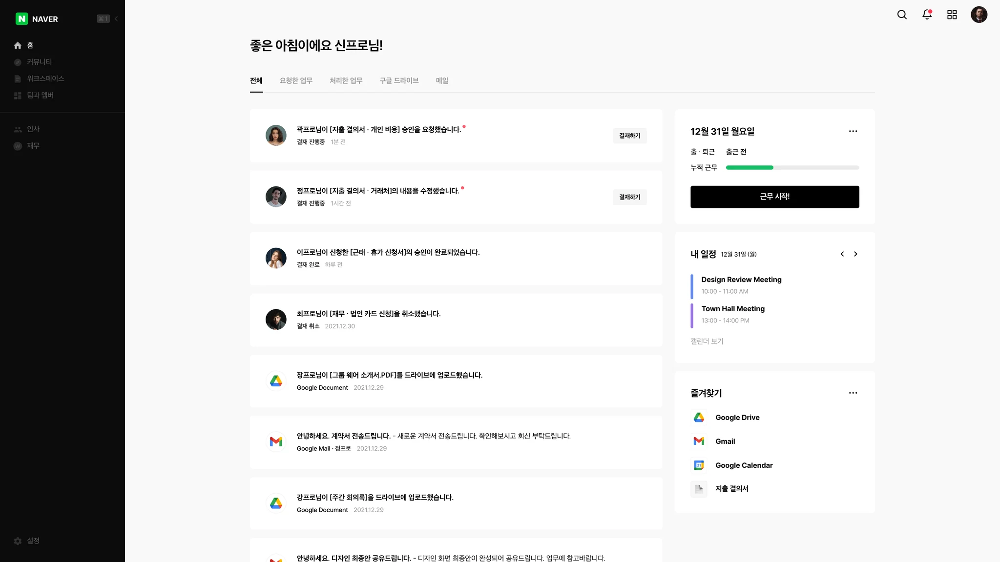

Project 01
그룹웨어프로 기획 및 SaaS 런칭
강력한 인사코어를 기반으로 전자결재와 재무 프로세스로 통합한 온프레미스급 SaaS 솔루션
- 서비스 기획 및 운영
- 2021 – 2025

1. 배경
프로젝트 개요 : 인사 · 재무 · 전자결재가 하나의 프로세스로 이어지는 초연결 업무관리 플랫폼 그룹웨어프로의 서비스 기획을 담당했습니다. 서비스 런칭 후에는 운영 전반을 맡았습니다.
기업들은 업무 편의를 위해 SaaS를 도입하지만, 도입한 SaaS들이 서로 연동되지 않아 서비스가 늘수록 유지보수 시간과 비용이 오히려 늘어나는 역설이 시장 전반에 있었습니다. 서비스마다 계정 · 권한 · 계약을 따로 관리하고, 시스템 사이에 끊긴 데이터는 담당자가 수작업으로 옮기고 대조해야 했습니다. 고객사 담당자들의 말이 이를 그대로 보여줬습니다. "서비스가 많아지니 비용이 상승하고 관리비도 상승해요", "신입사원에게 서비스 사용 교육비가 점점 커져요", "일부 제품은 너무 비싸서 재무팀만 사용해요".
대기업은 이 문제를 통합 · 연계 프로젝트(SI)로 풀지만, 중소기업에게는 그 비용 자체가 벽이었습니다. 그룹웨어프로는 대기업이 SI로 만드는 통합 프로세스를 중소기업이 도입 첫날부터 쓸 수 있는 SaaS로 제공하기 위해 시작됐고, 모든 업무의 주체 데이터인 인사(구성원) 정보를 중심으로 전자결재와 재무를 하나의 프로세스로 묶는 것을 목표로 삼았습니다.
2. 문제 정의
중소기업이 쓰는 SaaS는 회사가 크는 속도에 맞춰 늘어납니다. 회계로 시작해 협업툴, 근태 · 인사, 지출관리, 인사시스템까지 성장 단계마다 하나씩 들입니다. 새 서비스를 들일 때마다 당장의 불편은 풀렸지만, 서비스끼리는 서로 연결되지 않았습니다.
이 단절은 지출 한 건이 처리되는 과정에서 가장 선명하게 드러났습니다. 구성원이 법인카드로 결제하면 같은 건을 세 번 올립니다. 그룹웨어에는 품의로, 법인카드 서비스에는 증빙으로, 회계에는 전표로 올립니다. 승인자는 세 곳에서 알림을 받고, 어디서 승인해야 하는지 찾아 헤맵니다. 월말이 되면 일은 재무팀으로 넘어갑니다. 인사 데이터가 시스템마다 따로 있다 보니 그달의 입사 · 퇴사 · 부서 이동을 정산 내역과 눈으로 대조하고 손으로 옮겨야 했습니다.
이 모든 과정에는 매달 비용이 붙었습니다. 전자결재 · 알림 · 조직도처럼 겹치는 기능에도 서비스마다 따로 요금이 나갔습니다. 실제로 한 고객사는 HR · 재무 · 법인카드 결재 서비스 3종을 함께 쓰며 월 1,300만 원을 내고 있었습니다. 결재 중복, 수기 대조, 중복 과금은 서로 다른 문제처럼 보였지만 뿌리는 하나였습니다. 모든 업무의 주체인 구성원 데이터가 한곳에 없었다는 것입니다. 인사시스템이 없는 1세대 그룹웨어로는 이 연결을 구조적으로 만들 수 없었습니다. 연결을 직접 만드는 SI는 중소기업이 감당할 수 없는 비용이었습니다.
그래서 제품의 과제는 기능을 하나 더 얹는 일이 아니었습니다. 인사 데이터를 중심에 두고 결재 · 재무 · 근태가 하나의 프로세스로 이어지도록 설계하는 일이었습니다.
3. 제품 설계
통합 플랫폼을 기획하며 처음 부딪힌 질문은 '무엇을 만들까'가 아니라 '어디서 멈출까'였습니다. 고객이 쓰는 서비스를 전부 대체하면 겉으로는 완벽한 올인원이 됩니다. 하지만 고객 입장에서는 이미 쓰던 도구를 모두 버려야 하는 제품입니다. 도입 첫날부터 쓸 수 있는 SaaS라는 목표와는 정반대였습니다.
그래서 기능 목록이 아니라 구성원이 실제로 일하는 흐름에서 기준을 찾았습니다. 앞서 본 지출 한 건의 과정을 다시 보면, 구성원을 가장 힘들게 한 건 기능이 부족한 게 아니었습니다. 같은 일을 여러 곳에서 반복해야 한다는 점이었습니다. 같은 건을 세 번 올리고, 승인할 곳을 찾아 헤매고, 이미 있는 구성원 정보를 눈으로 대조했습니다. 기준은 여기서 나왔습니다. 구성원이 같은 일을 두 번 하고 있는가.
인사 · 근태 · 결재 · 재무 · 커뮤니티는 이 기준에 정확히 해당했습니다. 시중에 있는 서비스마다 조직도와 결재 · 알림이 따로 있어서, 구성원은 같은 정보를 여러 번 입력하고 여러 곳에서 알림을 확인했습니다. 그래서 이 영역은 한 제품 기능으로 전부 녹여냈습니다. 이때 각 기능들을 화면 단위가 아니라 업무 흐름 단위로 기획했습니다. 결재 화면 하나를 잘 만드는 것보다, 한 번 입력한 정보가 다음 단계로 이어지고 구성원 정보가 바뀌면 결재선과 정산도 함께 바뀌는 흐름을 만드는 게 더 중요하다고 봤습니다.
가장 오래 고민한 건 협업 · 메일 · 메신저였습니다. 그룹웨어라면 당연히 직접 제공해야 할 것 같은 기능입니다. 하지만 이 영역은 이미 구글 워크스페이스와 MS 365가 사실상 업무 표준으로 자리 잡고 있었습니다. 구성원들은 하루 대부분을 그 안에서 일했고, 입사 전부터 손에 익은 도구였습니다. 여기에 메일이나 메신저를 새로 만들어 넣으면 구성원은 비슷한 화면 두 개를 오가야 합니다. 반복을 줄이려던 제품이 오히려 오갈 곳을 하나 더 만드는 셈이었습니다.
그래서 대체하지 않고, 구글 워크스페이스와 MS 365 기능은 연동하기로 결정했습니다. 구성원이 SSO로 쓰던 계정 그대로 로그인하게 했습니다. 드라이브 · 캘린더를 연동해 파일과 일정을 다시 옮기지 않게 했고, 봇으로 필요한 알림을 쓰던 도구 안에서 받게 했습니다.
법인카드 · 홈택스 · ERP 커넥터는 입력을 없애는 기능으로 봤습니다. 카드 사용 내역과 홈택스 데이터는 이미 카드사와 홈택스에 원천 데이터로 쌓이고 있습니다. 구성원이 같은 내용을 다시 입력할 필요 없이, 그 데이터를 가져오기만 하면 됐습니다.
기획 초기에 가장 걱정한 건 회사마다 쓰는 카드사와 ERP가 다르다는 점이었습니다. 카드사는 스크래핑 벤더를 통해 데이터를 가져오는 방식으로 풀었습니다. 카드사마다 따로 연동하지 않고도 모든 카드사를 커버할 수 있었습니다. ERP는 회사마다 다른 시스템을 나중에 하나씩 붙이려 하면 그때마다 재무 구조를 뜯어야 한다고 봤습니다. 그래서 재무 기능을 기획할 때부터 ERP 연결을 전제로 두고, 스키마에 예산과목과 계정 코드 테이블을 처음부터 포함했습니다. 회사마다 ERP가 달라도 코드 체계만 맞추면 되도록 만들어 둔 것입니다. 덕분에 추후에 개발한 ERP 연동 커넥터로 각 회사의 ERP를 쉽게 연결할 수 있었습니다.
어드밴스드 기능까지 모두 기본으로 넣으면 쓰지 않는 메뉴와 설정이 화면을 복잡하게 만듭니다. 그래서 부가 모듈로 분리해 필요한 기능만 켜서 쓰게 했고, 요금도 쓴 만큼만 내도록 했습니다. 기본 화면은 가볍게 두고, 필요한 기능은 켜는 순간 붙도록 설계했습니다.
채용 · 급여 · 인사평가 · 자산은 필요성이 분명했지만 한 번에 만들지 않았습니다. 처음부터 메뉴가 많으면 구성원은 무엇부터 써야 할지 헤매게 됩니다. 이 기능들은 인사 데이터가 정확하게 쌓여 있어야 제대로 작동하기도 합니다. 그래서 매일 쓰는 인사 · 결재 · 재무 흐름을 먼저 손에 익게 하고, 그 위에 순서대로 더해 가는 로드맵으로 잡았습니다.
4. 진행
저는 인사와 결재 · 재무 모듈을 중점적으로 맡았습니다. 기획은 현업의 순서를 옮기는 데서 시작했습니다. 고객사 인사 · 재무 담당자를 직접 만나 발령, 정산, 마감이 실제로 어떤 순서로 도는지 듣고, 그 흐름을 업무 단위로 문서에 옮겼습니다. 스키마 구조를 먼저 정리했습니다. 구성원 · 조직 · 발령을 시점 기준으로 두는 인사 데이터를 잡고, 결재 · 근태 · 재무가 그 데이터를 어떻게 읽는지, 예산과목과 계정 코드 테이블까지 이때 정했습니다. 초기 기획과 화면 설계, 개발은 모두 이 스키마를 기준으로 진행했습니다.
인사 모듈은 구성원 · 조직 · 발령이 시점 기준으로 남아야 한다는 것부터 정했습니다. 발령을 정정하거나 감사 자료를 낼 때 과거 어느 시점의 조직도와 소속을 그대로 꺼낼 수 있어야 해서입니다. 결재 · 재무 모듈은 인사 데이터를 읽어 결재선을 만들고 법인카드 · 홈택스 데이터가 지출결의서 초안이 되도록, 정합성 검증 규칙과 예외 처리(마감 뒤 수정, 소속이 바뀌는 중인 구성원)를 기능정의서에 먼저 적었습니다. 그래서 지출결의서를 올릴 때 비용 사용일자를 입력하면, 그 날짜 시점의 소속 · 직책과 결재선을 끌어와 보여줍니다.
개발자와는 화면보다 데이터와 예외를 먼저 맞췄습니다. 시점 관리는 개발 입장에서 테이블이 늘고 조회가 복잡해지는 일이라 처음에는 현재 상태만 두자는 의견이 있었습니다. 발령 정정과 감사 대응 사례를 놓고 이야기해서, 데이터는 시점 기준으로 가되 조회 화면은 현재 시점을 기본으로 두는 것으로 조율했습니다. 예산과목 · 계정 코드 테이블도 당장 쓰지 않는 테이블을 왜 넣느냐는 질문이 있었지만, ERP를 붙일 때 재무 구조를 다시 뜯는 비용을 설명해 초기 스키마에 넣었습니다.
반대로 개발자가 기간 안에 완료하기 어렵다고 한 것은 기획을 바꿨습니다. 처음 기획은 지출결의서를 작성하는 동안 화면이 재무 데이터를 계속 읽어 오는 방식이었습니다. 예산과목을 고르면 남은 예산이 바로 뜨고, 금액을 넣으면 초과 여부가 즉시 표시되고, 마감된 달인지도 그 자리에서 보이는 식입니다. 구성원에게는 친절하지만 결재 양식이 재무 모듈에 계속 매달려 있어야 했습니다. 예산 잔액은 다른 결재가 승인될 때마다 바뀌니 화면을 열어 둔 동안 계속 다시 조회해야 하고, 결재와 재무가 서로 묶여 한쪽을 고치면 다른 쪽이 깨지기 쉬웠습니다.
그래서 작성 중에는 재무 데이터를 읽지 않고, 상신 버튼을 누르는 순간 한 번만 검사하는 방식으로 바꿨습니다. 그 과목에 예산이 남아 있는지, 마감된 달은 아닌지, 증빙이 붙어 있는지 확인해 통과하면 결재가 올라가고, 걸리면 이유를 보여주고 상신을 막습니다. 원래 목적은 틀린 결의서가 승인 라인에 올라가지 않게 하는 것이었고, 그 목적은 그대로 지켜졌습니다. 잃는 건 작성 중에 미리 안다는 편의뿐이었고, 결재와 재무가 상신이라는 한 지점에서만 만나니 구조는 오히려 단순해졌습니다. 작성 중에 본 잔액은 상신 시점에는 이미 바뀌었을 수 있는데, 상신 시점 검증은 항상 그 순간의 값으로 판단하니 더 정확하기도 했습니다.
이렇게 MVP로 먼저 내보낸 뒤, 추후에 사용성을 고려해 금액을 입력하면 초과 여부가 즉시 표시되고 마감된 달인지도 그 자리에서 보이도록 단계적으로 고도화했습니다.
화면은 피그마로 컴포넌트를 만들어 그렸고, 기능정의서와 화면 설계는 컨플루언스에, 개발 요청은 지라에 두어 하나의 요청이 접수부터 배포까지 이어지게 했습니다. 개발은 매월 배포 주기로 돌았습니다. 기획이 나오면 개발자와 이번 달 범위를 자르고, 만들어진 화면은 재무 담당자 사용성 테스트와 현업 피드백으로 검수한 뒤 배포했습니다.
5. 런칭 이후
기획에서 개발까지가 한 바퀴라면, 런칭 뒤에는 그 바퀴가 매달 돌았습니다. 먼저 고객이 제품을 만나는 단계부터 다시 봤습니다. 소개서 신청, 온라인 데모, 방문 PT, 라이브 확정으로 나눠 전환율과 걸린 날을 재 보니 온라인 데모를 본 고객은 36.7%(도입 예정까지 51.8%), 방문 PT를 본 고객은 63.3%가 도입했고, 체험 뒤 라이브까지는 평균 64일이 걸렸습니다.
두 배 가까운 차이는 연동이 설명으로는 전달되지 않는다는 뜻이었습니다. 방문 PT를 화면 소개가 아니라 한 건의 업무가 끝까지 흐르는 시나리오로 바꿨습니다. 발령 한 건을 넣으면 조직도와 결재선과 근태 기준이 같이 바뀌는 것, 법인카드 승인 내역이 지출결의서 초안이 되어 결재와 마감까지 가는 것을 그 자리에서 보여줬습니다. 데모 시연과 인사 · 재무 담당자 교육은 직접 맡았고, 도입이 확정된 고객은 첫 3개월을 집중 관리 구간으로 두고 세팅부터 첫 마감까지 같이 갔습니다.
운영에서 나온 것은 전부 지라로 돌아왔습니다. 교육과 데모에서 받은 질문, 고객 문의, 사용 로그를 VOC 티켓으로 쌓고 어느 화면에 무엇이 몰리는지 세어 다음 달 기획 순서를 정했습니다. 발령 한 건에 메뉴를 3~5개 오간다는 것, 연장 근무 신청이 메신저로 오간다는 것이 이렇게 잡혀 세부 프로젝트가 됐습니다. 기획, 개발, 배포, 측정이 매달 한 바퀴였습니다.
매일 쓰는 인사 · 결재 · 재무가 손에 익은 뒤에 채용, 급여, 인사평가, 자산을 순서대로 얹었습니다. 부가 모듈은 켜는 만큼 과금되는 구조라 고객은 필요한 것만 쓰고, 제품은 같은 인사 데이터 위에서 넓어졌습니다. 제품이 바뀔 때마다 소개서 · 매뉴얼 · 웹사이트를 같이 고쳤고, 투자 유치 IR 에서는 이 구조를 멀티 프로덕트로 설명했습니다.
프로세스를 경험한 유료 고객은 이탈이 없었고, 73%가 서비스를 추천하겠다고 답했습니다. 고객사가 남긴 말은 이랬습니다. "Small ERP 라고 불러도 되겠다", "사용 중인 3개의 SaaS가 통합 불가능한 이슈가 프로 도입으로 해결됐다", "강력한 인사코어가 상장 준비에 주요한 결정 포인트였다".
6. 세부 프로젝트
7. 작업물
다음 프로젝트
그룹웨어프로 법인카드 및 홈택스 연동